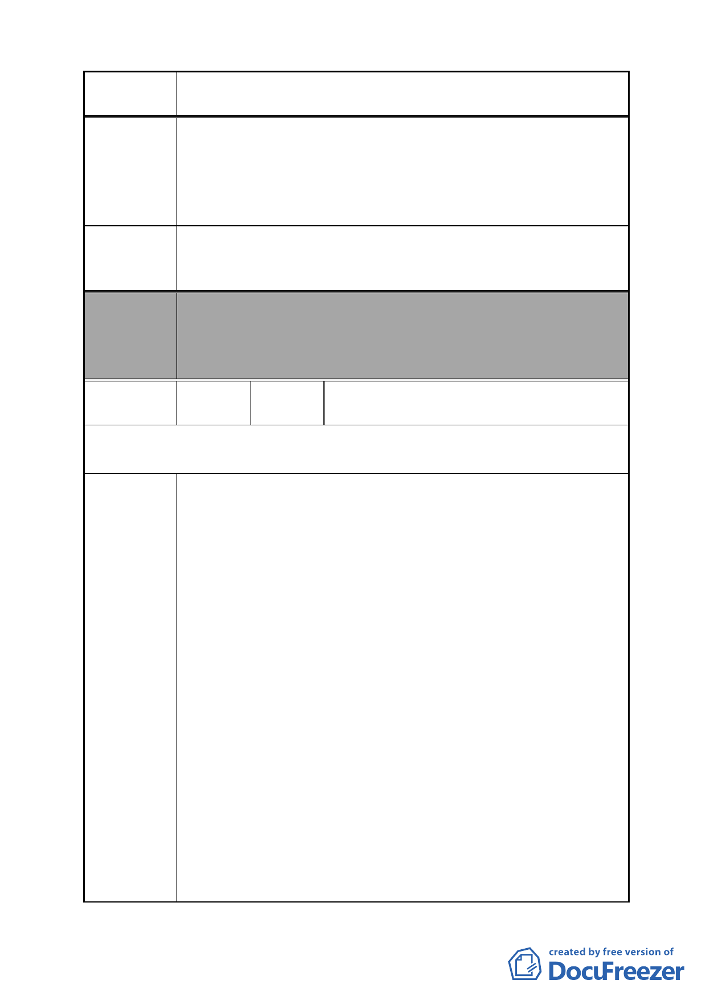

案 名 變更臺北市南港區鐵路地下化沿線土地主要計畫案
建議辦法
委員會
決議
編號
樓於 82 年 8 月取得使用執照，迄今僅使用 15 年，目前外觀
良好，居民居住環境優，並不妨礙市容，建築結構相當安全，
且為現有大部分區分所有權人唯一之財產，敬請體恤民情，
減少現住戶財務負擔，免納入市地重劃範圍，同意保留現況
繼續使用。
檢送本大樓各區分所有權人連署名冊乙份，敬請 貴會體恤
民情，避免增加現有區分所有權人之財務負擔，此次都市計
畫變更同意本大樓免納入市地重劃範圍，保留現況使用。
本案除文字誤繕應再作修正外，其餘依市府本次會議所送修
正計畫書內容通過。
（依市府本次會議所送修正計畫書，業將陳情地點剔除於市
地重劃範圍）
50
陳情人
臺北市政府函轉闕議員枚莎於市議會書
面質詢所提建議
第 1 次意見（第 10 屆第 4 次定期大會書面質詢）
陳情理由
1.南港區在三鐵共構及各項都市更新計畫完成後，將成為人文
科技並存的生活空間。郝市長甚至在主持南港區里發展座談
會時表示，南港區必定能成為臺北市的第二個信義區；但在
積極開發的背後，都發局卻犧牲了世代長居於南港的居民之
權益，讓這群居民還未享受到南港的繁華，就要面臨久居之
地被拆遷的命運。
2.「變更台北市南港區鐡路地下化沿線土地主要計畫案」Ｃ區
塊，變更為流行音樂中心使用之公園預定地乙案，都發局並
無考慮到當地居民的權益，光憑紙上作業就草率行事，本席
提出嚴重的抗議！
3.世貿財星大樓平日上班人數近三千人，是該區上班人數最
多、最有活力的。這些企業看好南港發展的遠景，在南港深
耕了二十多年，創造在地就業、活絡地方經濟，現在竟然為
了一條路，要逼迫他們搬遷，實在是不合情理。另外，世貿
財星大樓是工業辦公大樓，遷工廠和遷住宅是不同的，因為
工廠拆遷後的設計，不一定符合原本工廠的動線規劃，而且
搬遷後可能會影響客源。
4.施政有輕重緩急，當世貿財星大樓裡的企業正在咬牙苦撐，
期盼熬過景氣寒冬時，都發局也應苦民所苦、急民所急，另
擇影響最小的低度利用之土地，變更為公園用地，而非斷了
- 52 -